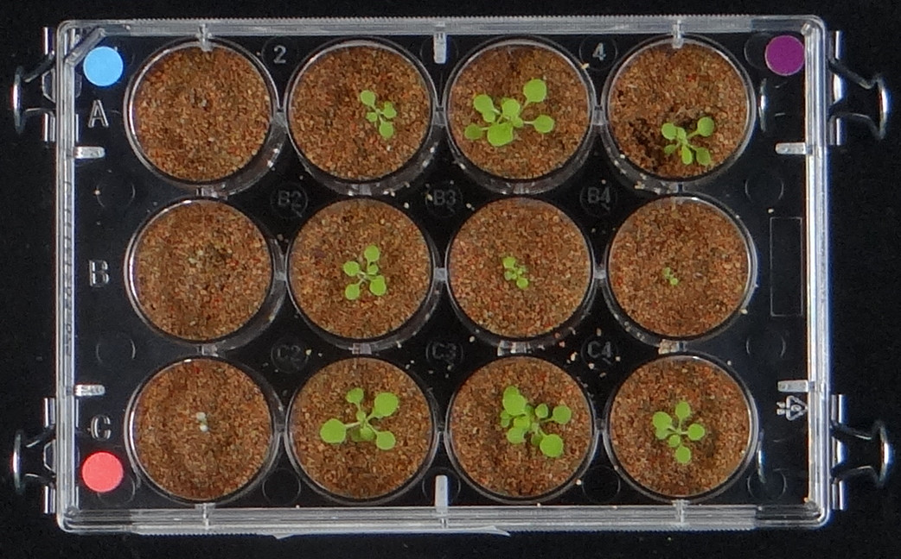
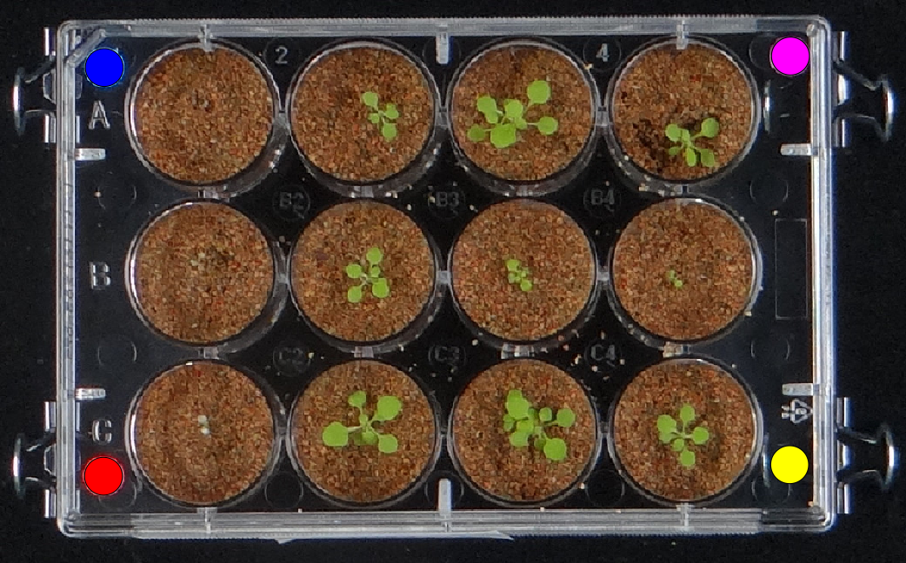
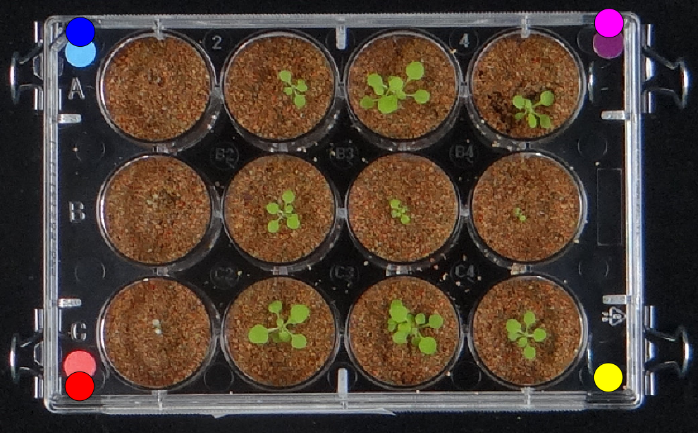
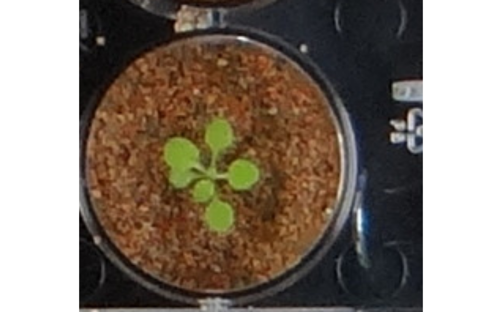
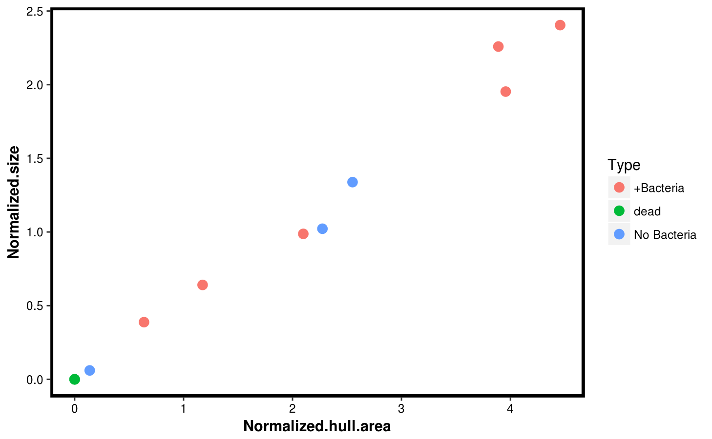
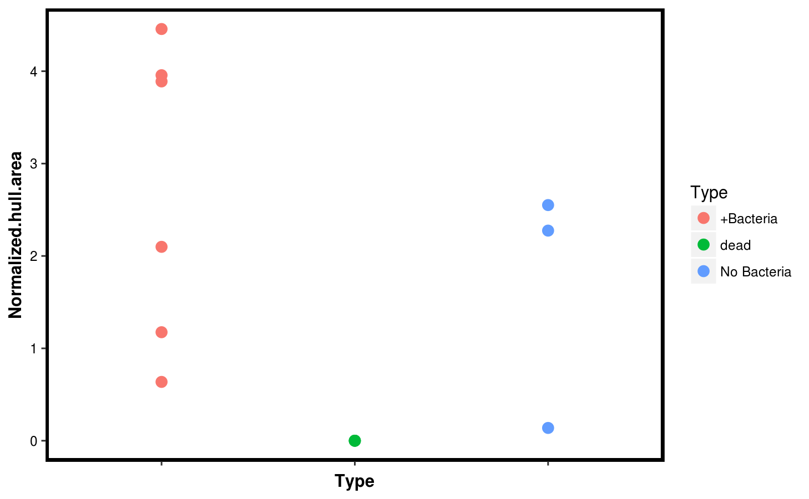

pipeline.RmdThis file describes a basic pipeline that goes from a picture of a 12-wel plate with individual plants on each well to basic size measurments of the plants. The steps are as follow:
The first thing to do is to load the RosetteDetector. We will also load the ggplot2 package that we will use later to make some descriptive plots. Then, we load the example1.jpeg image that is included with the RosetteDetector package:
library(RosetteDetector)## Loading required package: EBImage## Loading required package: reshape2## Loading required package: e1071library(ggplot2)
img_file <- system.file("images","example1.jpeg", package = "RosetteDetector", mustWork = TRUE)
img <- readImage(img_file)We can now display the image. In this particular setup a 12-well plate (4 x 3) was used, and three colored stickers wer positioned in three of the plate vertices as can be seen below.
display(img)
Our strategy to find the plate is to use the three round colored stickers. Each one has a different color and was located in a known position, with the blue sticker in the top left position, the magenta sticker in the topright position, and the red sticker in the bottom right position.
We can find the position of those three stickers with the function find_three_stickers. This function takes a range of RGB values (specified as mininmum and maximum) for each position. For this image we can use the values below:
# Find rectangle
res <- find_three_stickers(img = img,
topleft.min = c(0.1, 0.25, 0.25), topleft.max = c(0.25, 0.3, 0.4),
topright.min = c(0.1, 0, 0.1), topright.max = c(0.2, 0.15, 0.3),
bottomleft.min = c(0.2, 0.1, 0.1), bottomleft.max = c(0.4, 0.2, 0.2))The result of the previous command gives us the coordinates of each sticker, which corresponds to three of the vertices of the 12-well plate. We can use those 3 known vertices to find the fourth by using the function find_fourth_sticker. We can the use the function plot_platecrop to see where the three original stickers, and the final fourth position (labelled as a yellow circle) were identified.
res <- find_fourth_point(x = res)
plot_platecrop(img,res)
## class : RasterBrick
## dimensions : 648, 1042, 675216, 3 (nrow, ncol, ncell, nlayers)
## resolution : 1, 1 (x, y)
## extent : 0, 1042, 0, 648 (xmin, xmax, ymin, ymax)
## coord. ref. : +proj=merc +datum=WGS84
## data source : in memory
## names : layer.1, layer.2, layer.3
## min values : 0, 0, 0
## max values : 255, 255, 255While the stickers are correctly identified, it is important to note that the stickers were not in exact corners of the plate. As such, the space defined by the four points does not encapsulate the whole region of the 12-well plate that interests us. We can use the adjust_rectangle function to increase the distance between the four points. The following command add 30 pixels (on both directions) on each of the short sides of the rectangle defined by the four points (note that technically it is a trapezoid, since we did not confirm that the triangle from the original three points was a right triangle). After that, we plot the newly adjusted points:
# Adjust coordinates of rectangle
res.adj <- adjust_rectangle(points = res, v = 30, h = 0)
plot_platecrop(img,res.adj)
## class : RasterBrick
## dimensions : 648, 1042, 675216, 3 (nrow, ncol, ncell, nlayers)
## resolution : 1, 1 (x, y)
## extent : 0, 1042, 0, 648 (xmin, xmax, ymin, ymax)
## coord. ref. : +proj=merc +datum=WGS84
## data source : in memory
## names : layer.1, layer.2, layer.3
## min values : 0, 0, 0
## max values : 255, 255, 255With this adjustment the four points now encapsulate all of the wells, so we can proceed to crop the image.
We can now crop the plate making an image that corresponds to each well. We first create a directory to save the output (one file per well), and then we use the function crop_plate to generate the files. In this case, we also set return.images = TRUE wich will return a list including an image object per well; for big images this can be very memory expensive and so it is not recommended, but it is fine in this example.
# Crop image
dir.create("output")
crop <- crop_plate(img,res.adj,prefix="output/example1.",
cols = 4, rows = 3,return.images = TRUE,
adjust.cell = 10)We can then look at the individual well images, either by opening the files externally or, in this case, by displaying the objects we created
display(crop$Wells[[12]])
Now we have split the original image into wells, we can find the plant on each. We can use a Support Vector Machine (SVM) classified to this job. An SVM requires a training set to learn how to distinguish a plant. You can use one of the pre-trained models in the package. Just load the mode with:
data("m1_20141021tiny")Then we can use the function wrapper_predictdir_9feat, which takes a directory of images, and finds the plant on each of them processively. Therefore, we pass the function the created output directory (which contains the output from cropping the image), and the previously loaded SVM model Finally, we also pass some directory names that will be used to store more output.
sizes <- wrapper_predictdir_9feat(img_dir = "output/",overlaydir = "overlay",maskdir = "mask",m1 = m1)The output of the previous command is a table with the filenames read, and the size of the plant in the corresponding file. The size is expressed in pixes, but we can use the sticker size to normalize the size and use that to compare across different images. We also do some formatting and print the table:
row.names(sizes) <- NULL
sizes$Normalized.size <- sizes$npixels / res.adj$size
sizes## file npixels Normalized.size
## 1 output//example1.col1.row1.jpeg 0 0.00000000
## 2 output//example1.col1.row2.jpeg 0 0.00000000
## 3 output//example1.col1.row3.jpeg 0 0.00000000
## 4 output//example1.col2.row1.jpeg 956 0.64075067
## 5 output//example1.col2.row2.jpeg 1473 0.98726542
## 6 output//example1.col2.row3.jpeg 2914 1.95308311
## 7 output//example1.col3.row1.jpeg 3587 2.40415550
## 8 output//example1.col3.row2.jpeg 579 0.38806971
## 9 output//example1.col3.row3.jpeg 3370 2.25871314
## 10 output//example1.col4.row1.jpeg 1525 1.02211796
## 11 output//example1.col4.row2.jpeg 90 0.06032172
## 12 output//example1.col4.row3.jpeg 1997 1.33847185You can look at the overlay and mask directories created by the prediction function. It will have one picture for every processed image, one indicating the outline of the plant, and the other containing a mask that can be used to extract further information
One of the simplest features to extract is the convex hull area. The convex hull is the smallest possible convex polygon that encapsulates a shape (in this case the plant); its area is normally a more stable feature than the rosette area. We can use the function hull_area_from_mask to calculate it. We iterate through all the files in the mask directory created in the previous section, and append the results to the sizes table. We also normalize the values according to the size of the stickers in the original plate image:
# Calculate hull area from file
maskdir <- "mask/"
sizes$Hull.area <- NULL
for(i in 1:nrow(sizes)){
file <- as.character(sizes$file[i])
file <- paste(maskdir,"/",basename(file),sep = "")
cat(file,"\n")
mask <- readImage(file)
sizes$Hull.area[i] <- hull_area_from_masks(mask)
}## mask//example1.col1.row1.jpeg
## mask//example1.col1.row2.jpeg
## mask//example1.col1.row3.jpeg
## mask//example1.col2.row1.jpeg
## mask//example1.col2.row2.jpeg
## mask//example1.col2.row3.jpeg
## mask//example1.col3.row1.jpeg
## mask//example1.col3.row2.jpeg
## mask//example1.col3.row3.jpeg
## mask//example1.col4.row1.jpeg
## mask//example1.col4.row2.jpeg
## mask//example1.col4.row3.jpegsizes$Normalized.hull.area <- sizes$Hull.area / res$size
sizes## file npixels Normalized.size Hull.area
## 1 output//example1.col1.row1.jpeg 0 0.00000000 0.0
## 2 output//example1.col1.row2.jpeg 0 0.00000000 0.0
## 3 output//example1.col1.row3.jpeg 0 0.00000000 0.0
## 4 output//example1.col2.row1.jpeg 956 0.64075067 1752.5
## 5 output//example1.col2.row2.jpeg 1473 0.98726542 3131.5
## 6 output//example1.col2.row3.jpeg 2914 1.95308311 5903.5
## 7 output//example1.col3.row1.jpeg 3587 2.40415550 6649.5
## 8 output//example1.col3.row2.jpeg 579 0.38806971 950.0
## 9 output//example1.col3.row3.jpeg 3370 2.25871314 5803.0
## 10 output//example1.col4.row1.jpeg 1525 1.02211796 3393.5
## 11 output//example1.col4.row2.jpeg 90 0.06032172 206.5
## 12 output//example1.col4.row3.jpeg 1997 1.33847185 3806.0
## Normalized.hull.area
## 1 0.0000000
## 2 0.0000000
## 3 0.0000000
## 4 1.1745979
## 5 2.0988606
## 6 3.9567694
## 7 4.4567694
## 8 0.6367292
## 9 3.8894102
## 10 2.2744638
## 11 0.1384048
## 12 2.5509383Finally, we can perform some plots of the plant sizes we identified. We first append some metadata information to the different wells.
# Some manual plot
sizes$Type <- c(rep("dead",3),rep("+Bacteria",6),rep("No Bacteria",3))Then we use ggplot2 to compare the rosette area, and its hull area. They are quite consistent, so we plot the hull area only as a function of the sample type.
p1 <- ggplot(sizes,aes(x = Normalized.hull.area, y = Normalized.size, col = Type)) +
geom_point(size = 3) +
theme(panel.background = element_blank(),
axis.text = element_text(color = "black"),
axis.title = element_text(color = "black", face = "bold"),
panel.border = element_rect(color = "black", fill = NA, size = 2))
p1
p2 <- ggplot(sizes,aes(x = Type, y = Normalized.hull.area, col = Type)) +
geom_point(size = 3) +
theme(panel.background = element_blank(),
axis.text.y = element_text(color = "black"),
axis.text.x = element_blank(),
axis.title = element_text(color = "black", face = "bold"),
panel.border = element_rect(color = "black", fill = NA, size = 2))
p2